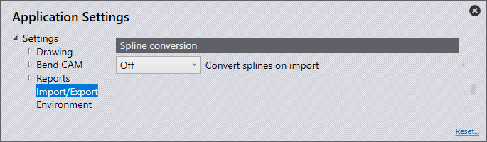

Import/Export
ในส่วนนี้จะครอบคลุมการตั้งค่าของ การตั้งค่าการนำเข้า

คลิกที่ไอคอน การตั้งค่า
 จากหน้าแรก
จากหน้าแรก

การตั้งค่าการนำเข้า
ในส่วนนี้จะครอบคลุมการตั้งค่าของ การตั้งค่าการนำเข้า คลิกที่ไอคอน การตั้งค่า คลิก นำเข้า/ส่งออก และนำทางไปยัง การตั้งค่าการนำเข้า

หน่วยสำหรับไฟล์ DXF - ตั้งค่าเป็นมิลลิเมตรหรือนิ้ว
ระยะห่างสูงสุดระหว่าง+ - ตั้งค่า ค่านี้ (≥0–1 มม.) เมื่อมีการนำเข้าชิ้นงานที่มีเส้น/ส่วนโค้งใกล้กว่าค่าที่กำหนด ซอฟต์แวร์จะทำการเชื่อมต่อโดยอัตโนมัติขณะนำเข้า
ความหนาแผ่นกั้นสูงสุด - เพื่อให้สามารถ จดจำชิ้นงานแผ่นโลหะขนาดใหญ่ได้ จะต้องเพิ่มค่า threshold สำหรับการจดจำ แผ่นโลหะ (10>40 มม.) โดยค่าเริ่มต้นจะถูกตั้งไว้ที่ 25 มม. หรือ 1 นิ้ว โดยขึ้นอยู่กับหน่วยที่เลือกใช้
หน่วย - ขึ้นอยู่กับตัวเลือกที่ตั้ง จะกำหนดว่าข้อมูลจุดจะถูกนำเข้าอย่างไร
นำเข้าทั้งหมด - นำเข้าจุดทั้งหมด และแสดงผล
คำแหน่งที่ข้ามโพลีไลน์ - ข้าม จุดทั้งหมดที่ตรวจพบใน polylines
ข้ามทั้งหมด - ข้ามจุดทั้งหมดในการนำเข้า และจะไม่มีการแสดงผลใดๆ
ไม่ใช้ระดับชั้นในไฟล์ DXF/DWG - แบบร่าง DXF และ DWG มักถูกสร้างในหลาย layer ด้วยการตั้งค่านี้ ซอฟต์แวร์จะละเว้น layer เหล่านี้และย้ายวัตถุทั้งหมดไปยัง layer เริ่มต้น
แยกบล็อกในภาพวาด 2D ออก - แยกกลุ่มระหว่าง การนำเข้า
แปลงออปเจ็กต์สีขาวเป็นสีดำ - เปิดใช้งานตัวเลือกนี้ เพื่อแปลงวัตถุสีขาวให้เป็นวัตถุดำขณะนำเข้า
สีเข้มขึ้นในขณะนำเข้า DXF- เปิดใช้งานตัวเลือกนี้ เพื่อทำให้วัตถุที่มีสีเข้มขึ้นเมื่อทำการนำเข้า
นำเซ็กเมนต์ที่ซ้ำกันออก - เปิดใช้งานตัวเลือกนี้ เพื่อลบ geometry ที่ซ้ำกันในชิ้นงานเมื่อทำการนำเข้า
การตั้งค่า DXF
ในส่วนนี้จะครอบคลุมการตั้งค่าของ การตั้งค่า DXF คลิกที่ ไอคอน การตั้งค่า คลิก นำเข้า/ส่งออก และนำทาง ไปยัง การตั้งค่า DXF

มุมในไฟล์ dxf เป็นมุมเปิด - เปิดใช้งาน การตั้งค่านี้เพื่อให้มุมในไฟล์ DXF ถูกจัดการเป็นมุมเปิด
การตั้งค่าการส่งออก
ในส่วนนี้จะครอบคลุมการตั้งค่าของ การตั้งค่าการส่งออก คลิกที่ ไอคอน การตั้งค่า คลิก นำเข้า/ส่งออก และ นำทางไปยัง การตั้งค่าการส่งออก

ไม่มีออปเจ็กต์ POLYLINE ในเอาต์พุท DXF - โดยทั่วไป contour แบบปิด จะถูกส่งออกเป็น polylines เมื่อทำการ export DXF CAD บางระบบไม่สามารถ ประมวลผลผลลัพธ์นี้ได้ ด้วยการตั้งค่านี้ ซอฟต์แวร์จะส่งออก DXF พร้อมเส้นตรง และส่วนโค้ง ไฟล์นี้สามารถอ่านได้ทุกที่ แต่จะมีขนาดใหญ่กว่า และการเชื่อมต่อระหว่างเส้นและส่วนโค้งจะสูญหาย
จะมีการแสดงเอาต์พุทข้อมูลส่วนโค้งงอจากการส่งออกไฟล์ DXF - เปิดใช้งานการตั้งค่านี้ เพื่อให้ไฟล์ DXF ที่ส่งออกมีข้อมูลการพับ
ข้อมูลการโค้งงอในรูปแบบ Starmatik - ปิดใช้งาน switch นี้ เพื่อส่งออกข้อมูลการพับในรูปแบบ Starmatik ตำแหน่งนี้คือจุดที่เอนทิตีข้อความ จะถูกวางไว้ตรงกลางของเส้นแต่ละเส้นที่เป็นเส้นพับ
แปลงเอาต์พุทสีดำเป็นสีเทา - เมื่อส่งออกข้อมูล 2D วัตถุในไฟล์ DXF จะถูกส่งออกเป็นสีดำโดยค่าเริ่มต้น เพื่อให้ โปรแกรม CAD สามารถจดจำวัตถุได้ดีขึ้น วัตถุจะถูกส่งออก เป็นสีเทาด้วยการตั้งค่านี้
เริ่มต้น MetaCAM โดยการส่งออกจากไฟล์ PDG - เปิดใช้งาน การตั้งค่านี้สำหรับไฟล์ PDG เพื่อกำหนดค่าโดยอัตโนมัติให้เปิดใน MetaCAM
รูปแบบเอาต์พุตสำหรับการประมวลผล - เมื่อทำการส่งออกรูปแบบแบน สามารถกำหนดให้ออกเป็นไฟล์ GEO, DXF หรือ PDG ได้
การแปลงค่าแกน
ในส่วนนี้จะครอบคลุมการตั้งค่าของ การตั้งค่า การแปลงค่าแกน คลิกที่ไอคอน การตั้งค่า คลิกที่ นำเข้า/ส่งออก และนำทางไปยังการตั้งค่า การแปลงค่าแกน

การแปลงค่าแกนในระหว่างนำเข้า - ตั้งค่าที่นี่ว่าจะปิดการแปลง spline หรือจะแปลง spline ให้เป็นเส้นตรงหรือส่วนโค้ง ไม่ว่าจะเลือกแบบใด spline แต่ละเส้นจะถูกแปลงเป็น polyline เดียวที่ประกอบด้วย segment แบบเส้นตรงหรือโค้ง
คำนวณจุดอ้างอิง - จำนวนของเส้นหรือส่วนโค้ง ที่จะถูกสร้างขึ้นถูกคำนวณจากหนึ่งในสองวิธี: pitch หรือ deviation
ความยาวสำหรับส่วนเส้นตรงหรือส่วนโค้งงอแต่ละส่วน - หากเลือก Pitch ในการคำนวณแบบ Node-Count ให้ตั้งค่าความยาวของเส้นโค้งหรือเส้นตรงแต่ละ segment เพื่อแบ่ง spline ตามความยาวที่กำหนด
ค่าเบี่ยงเบนสูงสุดในระหว่างประมาณค่า - หาก เลือก Deviation ในการคำนวณแบบ Node-Count ให้ตั้งค่า deviation สูงสุดที่อนุญาตระหว่าง spline ดั้งเดิมกับเส้นตรง หรือเส้นโค้งที่ประมาณค่า polyline จะถูกสร้างขึ้นด้วยจำนวน segment ที่น้อยที่สุด ขณะเดียวกันยังรักษาค่าความผิดพลาดสูงสุดให้อยู่ในขอบเขตที่กำหนด
ลบส่วนประกอบ
ในส่วนนี้จะครอบคลุมการกำหนดค่าของการตั้งค่า ลบส่วนประกอบ คลิกที่ไอคอน การตั้งค่า คลิกที่ นำเข้า/ส่งออก และนำทางไปยังการตั้งค่า ลบส่วนประกอบ

ละเว้นชิ้นส่วนสำหรับตัด - เมื่อทำการ explode assembly หากเปิดใช้งานตัวเลือกนี้ จะแสดงเฉพาะชิ้นส่วนแผ่นโลหะที่มีเส้นพับ การปิดใช้งานจะแสดงชิ้นส่วนทั้งหมดใน assembly
แสดงส่วนประกอบ (น็อตอัด สลัก+ - ใช้การตั้งค่านี้ เพื่อเลือกตัวเลือกที่จะแสดงเมื่อทำการ explode assembly ที่มีชิ้นส่วนอื่นรวมอยู่ด้วย
ปิด - แสดงเฉพาะชิ้นส่วนแผ่นโลหะหลังจาก explode และจะไม่แสดง nuts/bolts อื่นๆ
ไม่รู้จัก - แสดงเฉพาะชิ้นส่วน ที่ซอฟต์แวร์ยังไม่สามารถระบุได้
All - แสดงชิ้นส่วนทั้งหมด
การจัดระดับชั้น

ในส่วนนี้จะครอบคลุมการตั้งค่าของ การจัดระดับชั้น คลิกที่ ไอคอน การตั้งค่า คลิกที่ นำเข้า/ส่งออก และนำทางไปยัง การตั้งค่า การจัดระดับชั้น
ในส่วนนี้ layer ที่ใช้ในชิ้นงานที่ถูกนำเข้าใน ซอฟต์แวร์สามารถถูก map โดยอัตโนมัติไปยังการใช้งานที่เกี่ยวข้อง
หากชิ้นงานที่นำเข้ามี MARK layer จะสามารถตั้งค่า ให้ใช้ Mark layer ในซอฟต์แวร์โดยอัตโนมัติได้
ชื่อระดับชั้น - ชื่อนี้คือชื่อ layer ที่หากชิ้นงาน ถูกนำเข้ามาพร้อมกับ layer นี้ จะใช้ functionality ที่ตั้งค่าไว้ในแผง ‘Use’
ใชั - การทำงานของ layer นี้ ตัวเลือกที่แตกต่างกันที่มีให้ ได้แก่:
มาตรฐาน - Layer มาตรฐานที่ใช้สำหรับ CAM
อุปกรณ์ช่วยเหลือ - Layer เสริมที่ไม่ใช้สำหรับ CAM
ทำเครื่องหมาย - เอนทิตีใดๆ ใน layer นี้จะถูก mark แต่ไม่ถูกตัด
เครื่องหมายแสดงแนวทาง - เอนทิตีจุดที่ระบุ ตำแหน่งเข้าใกล้ของเลเซอร์
เครื่องหมายแสดงลำดับ - ข้อความที่ใช้เป็นเครื่องหมายระบุ ลำดับของเส้นรอบรูป
ศูนย์การปรับรูปร่าง - จุดกึ่งกลางสำหรับการขึ้นรูป (point หรือ L เล็ก)
มีการปรับภาพแรงดันส่วนขา - เส้นรอบนอก (footprint) ของ การขึ้นรูป
การระเหย - Layer นี้จะใช้สำหรับระบุ การเผาฟิล์ม
จุดเครื่องหมาย - Layer นี้จะใช้สำหรับ QR codes
ข้อมูล - Layer ที่ใช้เพื่อข้อมูลเท่านั้น